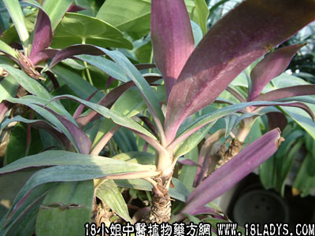

(本文解释权归中药材天地网兄弟站-18小姐中医植物药方网所有,如需转载请注明出处)

别名：红蚌兰花、菱角花。
植物名：紫万年青。
生长环境：本品为多年生肉质草本。盆栽作欣赏或药用。
分布：广州附近广为栽培，美洲亚洲热带，各地均有分布。
入药部分：花。
采集期：夏、秋。
自采地点：家种。
性味：性凉、味甘淡。
功能：止咳、除痰火。
主治、用量和用法：①痨伤咳血、便血：干用20至30朵，猪瘦肉适量，清水煎服；②衄血：干用20至30朵，猪鼻适量，清水煎服；③痰火核：干用20至30朵，清水煎服；④肺燥咳：干用20至30朵，蜜枣5至6枚，清水煎服；⑤小儿生积，青筋络肚，配伍用。
验方：（治小儿生膀）蚌花10朵、寮刁竹1钱、陈皮5分，清水煎服。
（方解）腹部有肿块，名为生膀（一作蚌），一般认为因气郁瘀结而成。故方中以三种行气药以解郁；寮刁竹并有散瘀去毒作用，合为化气行瘀散结之剂。
附录：（叶）治蚌疮（阴唇疮）用鲜叶，加片糖擂烂敷患处；并用蚌花、猪瘦肉煎服。
（方歌）小儿生膀用蚌花，刁竹陈皮两味加，妇人若患阴唇肿，用叶加糖捣如渣，再用蚌花煲瘦肉，外敷内服效堪嘉。
(本文解释权归中药材天地网兄弟站-18小姐中医植物药方网所有,如需转载请注明出处)